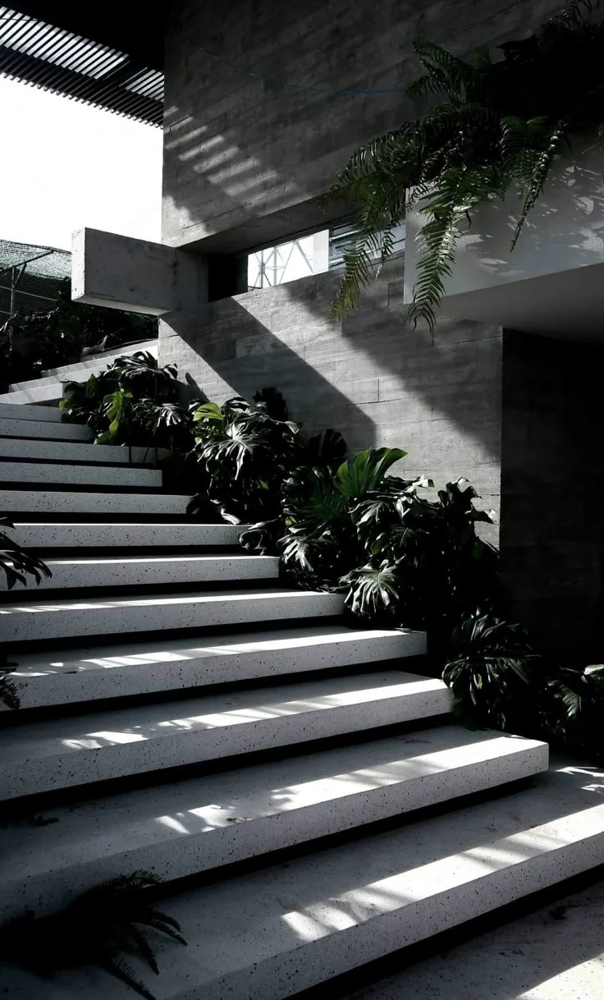

Services
SERVICES
服务内容覆盖建筑概念、室内方向、庭院氛围与项目陈述，形成从空间策略到细部控制的完整链条。
SYSTEM
01
Architecture Concept
从场地、朝向、体块和结构关系建立建筑的基本秩序。
02
Interior Direction
控制材料、灯光、家具和行走路径，让室内保持安静层次。
03
Landscape Mood
组织庭院、水面、植物和边界，使自然成为空间的一部分。
04
Project Narrative
以模型、影像和文字陈述整理项目气质，保持作品表达完整。

Focus
Light marks the material.
粗粝混凝土、植物阴影和狭长天光共同塑造空间的深度，让行走过程具有清晰的方向感。